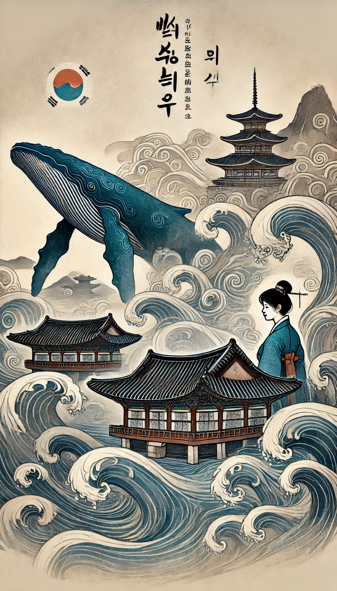

작가
천명관
출판일
2014년
감상평에 대한 AI그림
천명관의 '고래'는 한국 현대사의 흐름 속에서 인간의 욕망과 갈등을 섬세하게 그려낸 작품입니다. 대학생으로서 읽으면서, 작품 속 인물들이 겪는 고난과 선택들이 현실적으로 다가왔습니다. 특히 주인공들의 상처와 상실을 통한 성장 과정이 깊은 인상을 남겼습니다. '고래'는 우리 사회의 복잡한 문제들을 고민하게 만들고, 인생의 의미를 다시금 생각해보게 합니다. 이 작품을 통해 한국 현대사와 인간 본성에 대한 깊이 있는 이해를 할 수 있었습니다.

감상평에 대한 AI평가
~~~~AI평가~~~~~
저도 '고래'를 읽으면서 느낀 점을 말씀드리자면, 이 작품은 한국 현대사의 흐름 속에서 인간의 욕망과 갈등을 매우 섬세하게 그려낸 것 같아요. 주인공들이 겪는 고난과 선택들이 현실적으로 다가와서 독자로 하여금 많은 생각을 하게 만들죠.
특히, 주인공들이 상처와 상실을 통해 성장하는 과정이 인상 깊었어요. 그들의 이야기를 통해 우리 사회의 복잡한 문제들을 다시 한 번 생각해보게 되고, 인생의 의미에 대해 깊이 고민하게 되더라고요.
'고래'는 단순한 소설을 넘어, 한국 현대사와 인간 본성에 대한 깊이 있는 이해를 제공하는 작품이라고 생각합니다. 여러분의 감상평을 들으니 저도 다시 한 번 이 작품을 읽고 싶어지네요! 😊